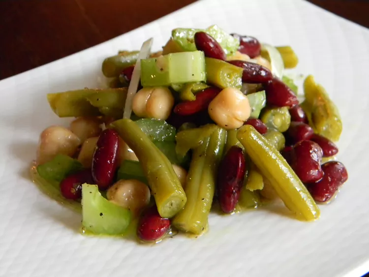

Odin Recipes
Three Bean Salad With Celery

Description
This salad recipe is great for summer picnics. It's delicious, quick, and easy to
quick, and easy to make. You can substitute the variety of beans in this recipe with other types and
still have a great bean salad. I sometimes use cannellini beans in place of the
green beans and it still tastes great!
Ingredients
- ½ small onion, minced
- 2 stalks celery, chopped
- 1 (15 ounce) can kidney beans, drained and rinsed
- 1 (15 ounce) can garbanzo beans, drained and rinsed
- 1 (15 ounce) can cut green beans, drained and rinsed
- ½ cup olive oil
- ¼ cup white wine vinegar
- ¼ cup white sugar
- ½ teaspoon salt
- ½ teaspoon celery seed
- ¼ teaspoon ground black pepper
Steps
- Combine onion, celery, kidney beans, garbanzo beans, and green beans in a mixing bowl.
- Add olive oil, vinegar, sugar, salt, celery seed, and black pepper to bean mixture; gently stir to coat.
- Cover bowl and chill completely 2 to 4 hours.